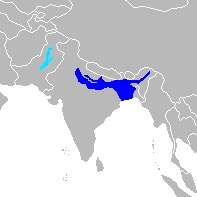
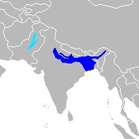

The "Blind" River Dolphin
Found in the Ganges-Brahmaputra-Meghna, the Karnaphuli-Sangu river systems and the Indus River, the South Asian river dolphin lives up to its name. They have long beaks and pointed teeth for eating prey, and long fins. Along with this they have a "stocky" body that is usually grey, pale blue, or light brown in color. They are nicknamed "blind" because they have small eyes that are lacking a crystalline lens, making them hard to see out of. Like other dolphins, they have a blowhole at the top of their heads.
Facts About The South Asian River Dolphin
There are two types of South Asian river dolphins: the Indus bhulan and Ganges susu. However, this classification is generally disregarded. When the species was thriving, they were often found in schools in the rivers. Now, generally are found alone, in a pair, and sometimes in a small group. They swim on their sides, their fins touching the river bottom, scanning for food. Their diet consists of many fish and even some freshwater sharks! The average life span is unknown, but the oldest recorded was a male at the age of 28 years old!


 

Conservation
With only less than 4,000 populating the earth, the South Asian River Dolphin is extremely endangered. Overpopulation has ultimately been the cause of their endangerment. They are illegally hunted for several reasons, but are sometimes accidentally captured in large fishing nets. Chemical pollution and overgrown greenery have also contributed to the reduction of this species. They are not a commonly talked about species, therefore little is being done to protect them. WWF is currently working in India to protect these dolphins from fishers, and are trying to prevent further pollution of the rivers. They are also working in Nepal to reduce threats to this endangered species. To help, please spread awareness so we can save this incredible animal!